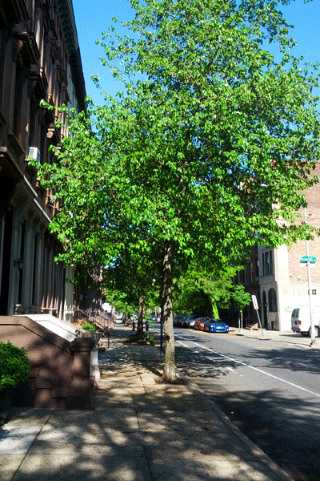
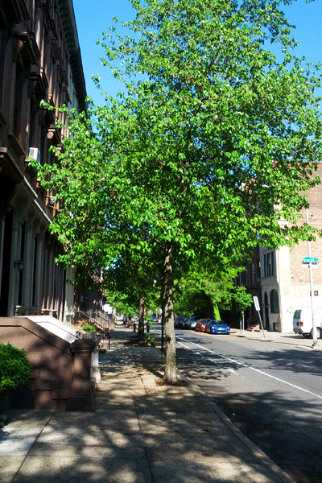

Strength, Wisdom, and Commerce | New York City, New York, USA
Photography
Record of studies, observations, & travels through the lens.
Drawing is an exceedingly useful method for understanding the environment around oneself. Slowing down the normal pace of daily life or a packed travel itinerary, taking the time to draw allows for the absorbing and analysis of underlying concepts, orders, & assembly of natural & constructed objects. I strive to maintain an active, ongoing, & varied personal sketchbook in order to continue developing my drawings & analysis skills.


Ocean spectating | Outer Banks, North Carolina, USA

 

Seasons of Pine Street | Philadelphia, Pennsylvania, USA


Broad Street Procession | Navy Yard to City Hall | Philadelphia, Pennsylvania, USA